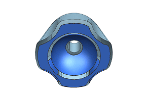
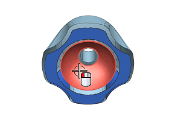
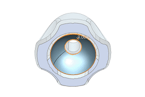
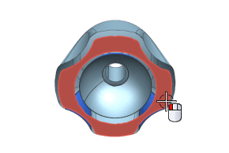
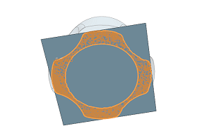

Fit a spherical and a planar surface to facet bodies
-
Rotate the part so you can see the underside.

-
Choose Insert→Surface→Fit Surface.
-
In the Fit Surface dialog box, from the Type list, select Fit Sphere.
-
Select the interior spherical facet body.

-
In the Fit Conditions group, clear the Closed
 check box.
check box.

-
Click Apply.
-
From the Type list, select Fit Plane.
-
Select the planar facet body.


-
Click OK.
You now have all the fit surfaces necessary. The next step is to finish the blending of the fit surfaces.